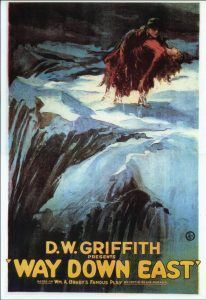
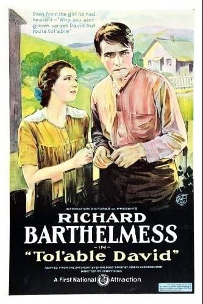
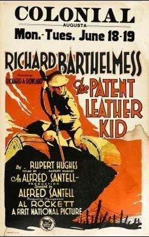
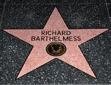
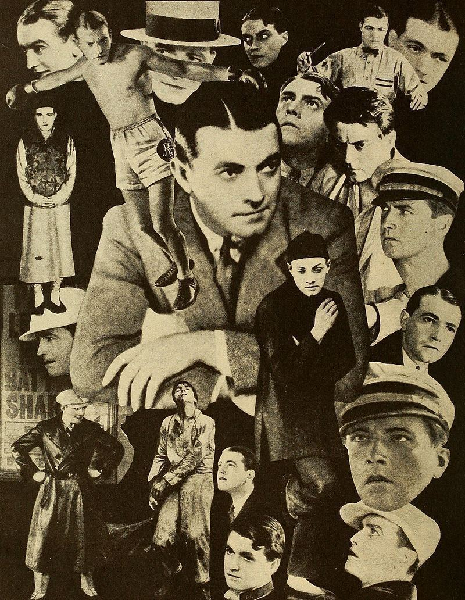

From the Archives · 1917
Psi U's Star of the Silent Film Era

Richard Barthelmess, Beta Beta 1917 (Trinity College) was a star of the silent film era and influential in Hollywood and helped build it to the institution it is today. He was born into an acting family and got his start in stage plays in college and stock company experience. After some small roles he caught the eye of D.W. Griffith who offered him his breakout roles, first starring opposite Lillian Gish in Broken Blossoms in 1919 and then Way Down East in 1920. Soon after this he co-founded his own production company, Inspiration Film Company, in 1921 and then Richard Barthelmess Productions in 1923 to better control his roles.
Barthelmess was known to be one of the most handsome actors of his time. Lillian Gish once described him as having "the most beautiful face of any man who ever went before the camera" and Photoplay magazine called him "The idol of every girl in America" in 1922. Another of his early roles that had much acclaim was in Tol'able David where he played David Kinemon, a young man who has to choose between supporting his family or seeking revenge against those who crippled his brother and were responsible for his father's death. The film received the 1921 Photoplay medal of honor and in 2007 was selected for preservation in the National Film Registry by the Library of Congress.
In 1927 he became one of the thirty-seven founders of the Academy of the Motion Picture Arts and Sciences and at the first presentation of the Academy Awards on May 16, 1929 he was nominated for Best Actor twice for his roles in The Noose and The Patent Leather Kid. In addition, he won a special citation for producing The Patent Leather Kid.
Like many actors of the silent era, his acting style was not well suited for sound and his roles started to become smaller in the 1930's. One of his last standout roles was in Howard Hawk's Only Angels Have Wings in 1939 and he retired as an actor in 1942. During his Twenty-six year career he was in 80 movies. He enlisted in the United States Navy Reserve during World War II, and served as a lieutenant commander. In 1957 he was among the second group of recipients of the George Eastman Award for his distinguished contribution to the art of film and in 1960 he received a star on the Hollywood Walk of Fame. His son, Stewart Barthelmess, followed in his footsteps at Trinity College and joined the Beta Beta Chapter class of 1944 and while he didn't become an actor he also served in the Navy.

A collage of various roles performed by Richard Barthelmess



